Compose can produce arbitrary directed graphs
Though we've so far explained compose as producing trees, there's nothing stopping one from producing an arbitrary directed graph. This can be quite useful in some cases.
In this example, only one triangle object is ever initialized, despite many triangles being drawn, which is possible because the graph produced by siepinski is not a tree. The triangle polygon has many parent nodes than “re-contextualize” that triangle by repositioning it.
function sierpinski(n)
if n == 0
compose(context(), polygon([(1,1), (0,1), (1/2, 0)]))
else
t = sierpinski(n - 1)
compose(context(),
(context(1/4, 0, 1/2, 1/2), t),
(context( 0, 1/2, 1/2, 1/2), t),
(context(1/2, 1/2, 1/2, 1/2), t))
end
end
composition = compose(sierpinski(6), fill(LCHab(92, 10, 77)))
draw(SVG("sierpinski.svg", 8cm, 8*(sqrt(3)/2)*cm), composition)
There are no safeguards to check for cycles. You can produce a graph with a cycle and Compose will run in an infinite loop trying to draw it. In most applications, this isn't a concern.